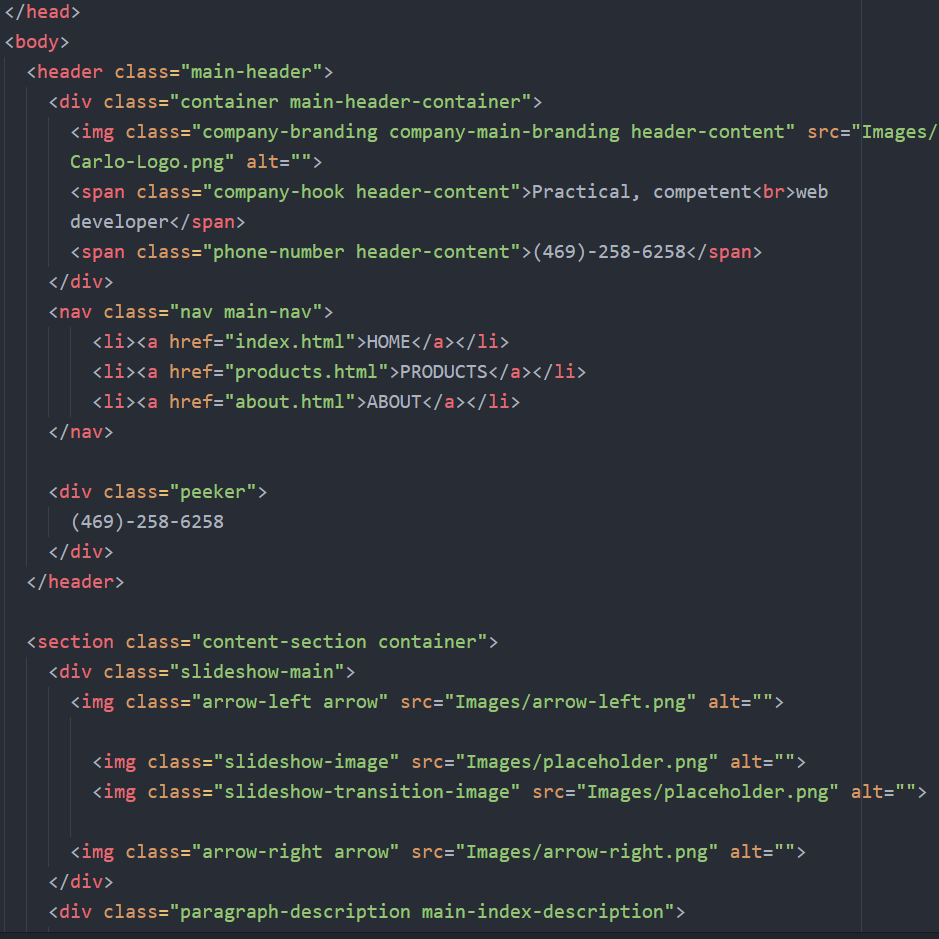

Creating this template website has been my way of taking the knowledge and information I’ve gathered online and learning how to apply it into a real world situation. Most aspects of HTML and CSS are quite simple, so I will limit this page to the more interesting aspects of building this site such as layout choices, CSS interactions, and JavaScript.
Layout Choices
CSS Utilization
JavaScript
Code Screenshot
Gallery
After deciding the purpose of my website, determining who will be visiting my website and getting into their mindset is a necessary step in making good design choices. People looking to hire me would want to know about my experience and attitude right away without having to spend time finding it. A customer visiting a restaurant would want to know what the food looks like and what makes it desirable. For both of these cases, the visitor should at least want to know who I am, what I do, what my experience is, and where they can get more information. It’s important that everything is designed efficiently; big pictures and descriptive words are great ways to allow a viewer to effortlessly absorb the right information for a proper first impression. If the visitor decides they do want more information, simplicity and organization is key. It is important not to overwhelm the visitor with too many choices. For my version of the website I only have the showcase and about page displayed on the header. About is short and sweet, however showcase requires proper grouping and ordering.
List of CSS Variables I use to control the theme of the website easily.
Graphic design can be difficult especially with my inexperience, so I decided to organize the CSS file so that most of the website colors can be easily changed through CSS variables at the top of my CSS file. This way I can find color themes online and easily test and organize them for quick trial and error.
Making the website responsive so that it is functional for both mobile and desktop is another step of high priority. For my own purpose of a web portfolio it might not be as relevant, but a large amount of the visitors on local business websites are using mobile devices. Flexbox, percent units, view width units and more were all used to keep pictures large and text readable while still maintaining a clean layout, essential for an easy and functional mobile experience.
Although JavaScript is not as simple as HTML and CSS, it was the most familiar to me since I have worked with both Java and Python before. Logically it follows a much more similar structure since it is about making things move and interact as opposed to mostly formatting. After learning enough syntax I was able to apply my experience to make simple JavaScript applications without much struggle. My JavaScript inexperience likely shows in my code, however the logic and intuition is there. Learning syntax is much easier than critical thinking skills.

HTML Code for the Index/Home page of the website showcasing specifically the phone number peeker and slideshow.
JavaScript code for the Index/Home page of the website showcasing specifically the phone number peeker and slideshow.
 JavaScript code for the Index/Home page of the website showcasing specifically the phone number peeker and slideshow.
JavaScript code for the Index/Home page of the website showcasing specifically the phone number peeker and slideshow.
JavaScript code for the simple image lightbox.
JavaScript code for quickly scrolling through a page.